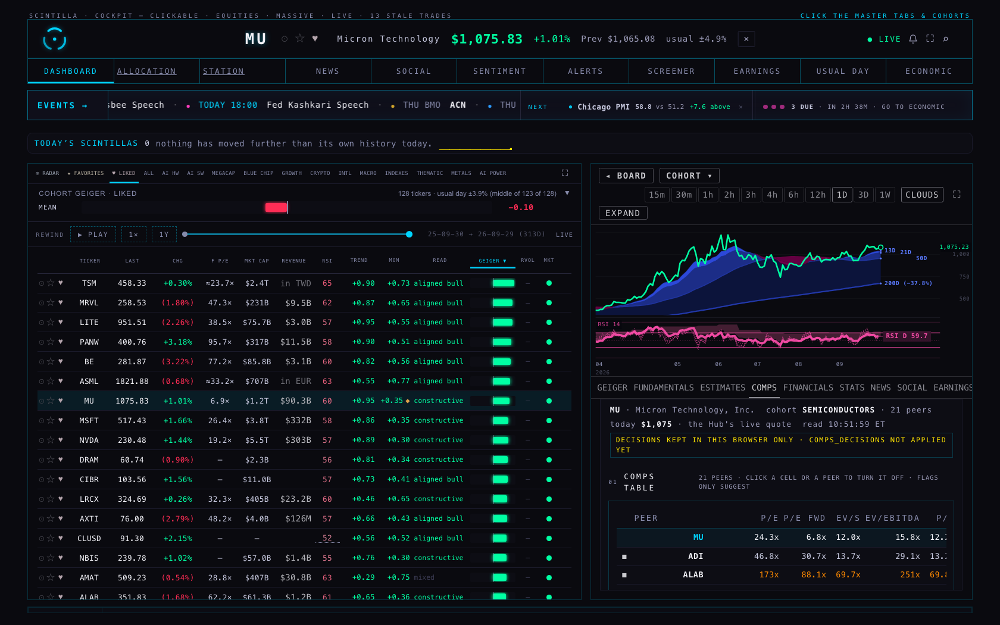
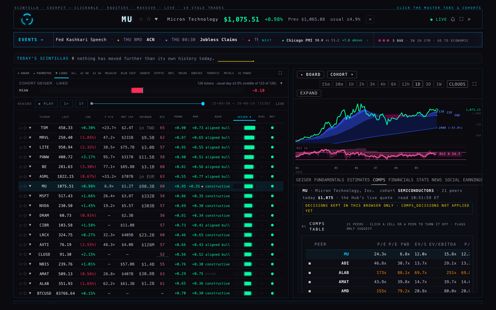
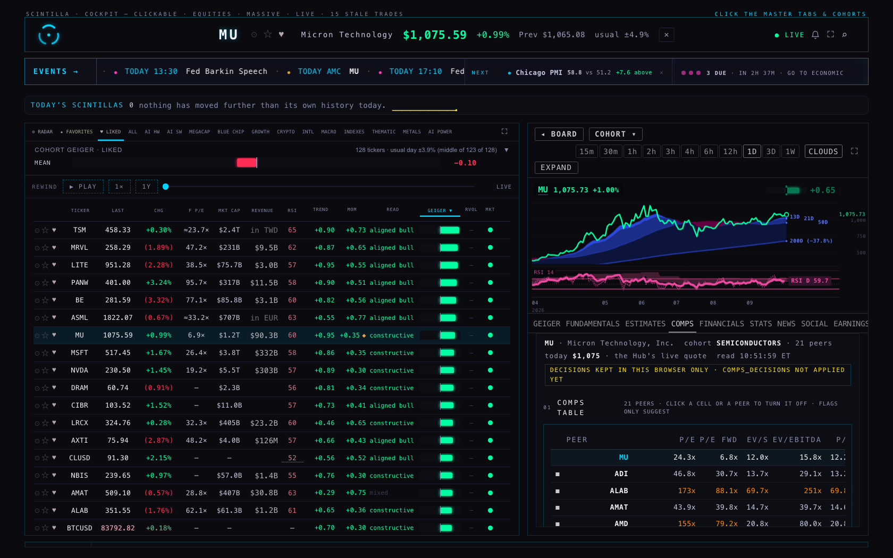
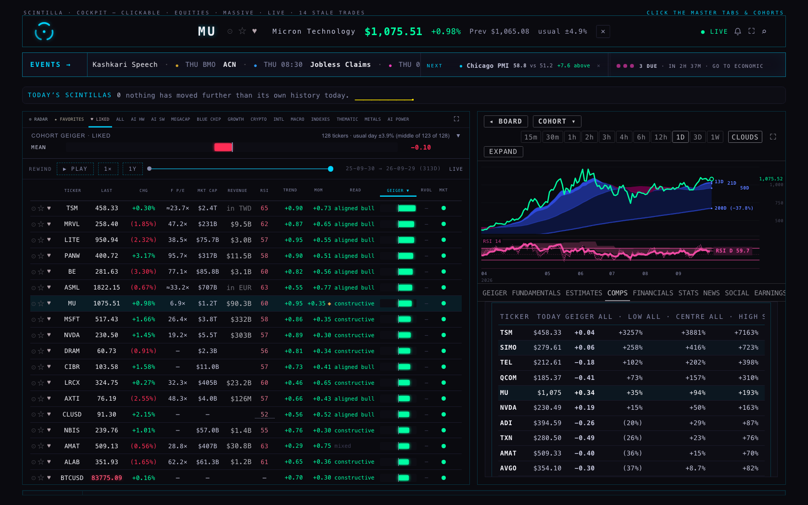
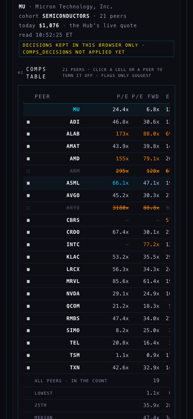
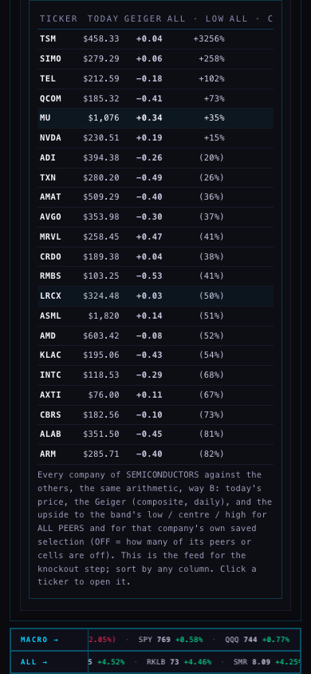

The comps are now their own tab, COMPS, beside ESTIMATES in the company view (keys 1–9 reach the first nine tabs, 0 the tenth), and ESTIMATES is exactly what it was before C1. The tab is drawn in the Hub's own look: its colour tokens, its mono type and sizes, its section heads and header cells, quiet cyan hairlines, no white, green and red only for direction. First comes the comps table: one row per peer, the six multiples, a flag on any cell that deserves one, and a toggle on every peer and on every single cell. Turning something off recomputes the percentiles, the band and the upside at once, and the page always shows ALL PEERS next to YOUR SELECTION; nothing is set aside by a rule any more (the C1 caps and the Tukey "outliers set aside" band are gone). Under it the field (six rows, all peers over your selection on one axis), then ways A, B and C explained in plain words and drawn on one axis, B pre-selected as a proposal and switchable, then the upside for both sets, then the cohort table: every company of the cohort with today's price, its Geiger and the upside to the chosen way's low / centre / high for all peers and for its own saved selection, sortable. A decision is a dated row, saved the way the Hub saves its lists; put back is a newer row that turns it on again, so the history stays. The table for it, public.comps_decisions, is an additive migration for the coordinator; until it is applied the tab keeps the decisions in the browser and says so in yellow at the top.
01 Comps table. MU's row first (24.3x · 6.8x · 12.0x · 15.8x · 12.2x · 0.5x), then its 21 SEMICONDUCTORS peers with all six multiples. No cap: ALAB at 173x and AXTI at 3192x on trailing P/E are in ALL PEERS, flagged FAR; INTC's trailing P/E and CBRS's four measures are "—" flagged NM with the reason on hover (a negative or missing figure). Under the peers: the lowest / 25th / median / 75th / highest for ALL PEERS, the same for YOUR SELECTION (a changed number turns cyan), then the FAR rule's two numbers per measure: the typical gap and the threshold (3 × the typical gap around the median, e.g. trailing P/E: median 47.3x, typical gap 20.2x, threshold ±60.6x).
Two peers off. Clicking AXTI's and ARM's toggles (each opened the one-line reason row; DIFFERENT BUSINESS was picked and saved) moved YOUR SELECTION's medians from 47.3x · 34.0x · 19.9x · 45.4x · 20.1x · 1.0x to 46.7x · 33.4x · 19.0x · 38.7x · 18.8x · 1.0x while ALL PEERS stayed. Way B's band moved from $1,448 – $3,139, centre $2,079 (+94%) to $1,285 – $2,879, centre $2,068 (+93%). SAVED DECISIONS lists both with the reason and the time and a PUT BACK on each; PUT ALL BACK restored the original numbers exactly (the "back" screen).
02 The field. Six rows, each with two lanes on one axis: ALL PEERS on top, YOUR SELECTION below, every mark named, MU today as the diamond with the upside to the median on the arrow; the prices each mark implies for both sets in the column on the right. A row whose peers span more than 50× (trailing P/E with AXTI, PEG) is drawn on a log axis and says so.
03 Three ways. A range of the medians ($1,769 – $5,392, centre $2,079 on all peers), B middle-half band ($1,448 – $3,139, centre $2,079), C weighted blend ($1,880 – $4,171, centre $2,627): each explained in one line, drawn on one dollar axis for YOUR SELECTION with ALL PEERS as the faint line above, and tabled for both sets. B is pre-selected as a proposal; A or C can be picked and the upside and the cohort table follow.
04 Upside. Two boxes: ALL PEERS +94% to the centre, YOUR SELECTION +93% (with AXTI and ARM off), low / centre / high in dollars and percent.
05 Cohort. All 22 SEMICONDUCTORS names: today's price, Geiger, upside to the low / centre / high for all peers and for the company's own selection, sortable by each header, ticker opens the company. It is the feed for the knockout step, nothing more yet.






What I saw. At 1680 the tab sits in the company pane under the chart, next to the board: the same dark panel, the same 8.5-px uppercase header cells, cyan hairlines, mono numbers, green and red only on direction. The ESTIMATES tab, opened afterwards, carries no comps (measured: no comps box, its own section heads present). At 390 the same, stacked. No page error and no chart API failure in any run.
ticker_cohorts; funds are excluded by name. The cohort is read once and every member's snapshot is cut from the same inputs (deliverables/20260930/comps-tab/cohort.mjs).deliverables/20260927/comps-r3/r3.mjs → compsRead) on fundamentals, analyst_estimates, fundamentals_history (four quarters added), balance_history, company_profile — FMP data as the Hub stores it — run with the cap switched off, so every positive multiple is in. P/S on the same inputs./quotes for the rest; the fundamentals row's dated price stands in if the quotes fail, and the header says so. Geiger: composite_staged, daily, newest row.peerBand and the C1 arithmetic (deliverables/20260929/comps-live/ladder.mjs → priceAt, repriceRow), so a selection is repriced exactly as the full set is.rangeOfMedians, middleHalfBand, weightedBlend from the approved deliverables/20260928/comps-r3-labels/labels-r3.mjs, unchanged; C's weights are the 28 Sep proposal.comps-tab.mjs → flagRow: NOT MEANINGFUL when there is no number; FAR FROM THE PACK when |peer − median| > 3 × the typical gap, the typical gap being the median of |peer − median|; DIFFERENT BUSINESS is the operator's toggle.comps-tab.mjs → decisionRow / selectionOf (latest per company · peer · measure wins); stored by tab.mjs as a POST to comps_decisions (the migration) or, until it exists, in localStorage sc_comps_decisions.tests/comps-tab.test.mjs (10): toggle arithmetic (peer and cell, put back), save and put back, flags on the fixture and by hand, the three ways, the cohort table and its sorting, the Hub's wiring, the look (tokens only, no white). Fixtures: the 30 Sep cohort reads for SEMICONDUCTORS and AI_POWERTRAIN.supabase/migrations/20260930_comps_decisions.sql (+ _ROLLBACK.sql) is for the coordinator to apply; it opens read and insert to the public key the way station_lists is written, which the coordinator should confirm.deliverables/20260929/comps-live/ stay as they are (their tests still pass); the Hub no longer loads them.comps_decisions migration (every device sees the same selection, as with likes) or keep them per browser. Recommendation: apply it, with the same public-key write the lists already use, or tell me how the operator should authenticate.